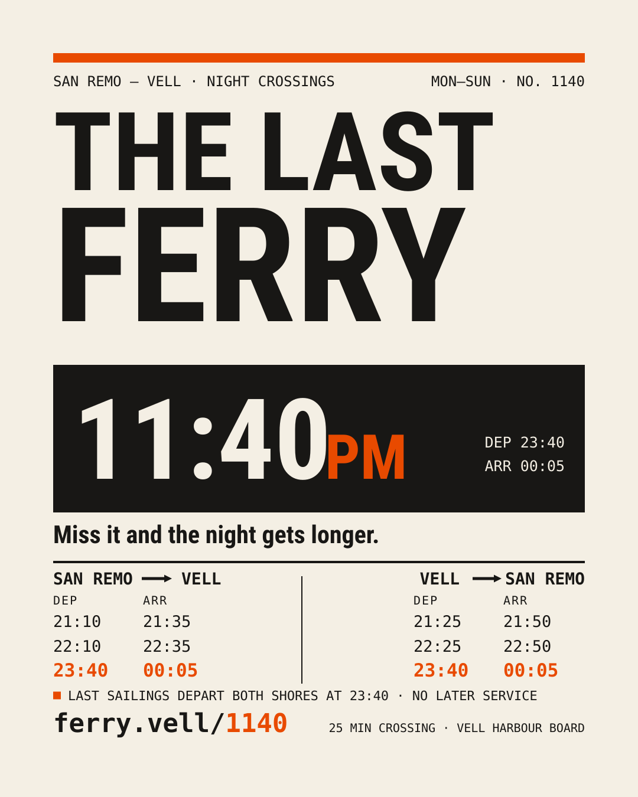

01 · Poster
prompt (thin)
Return exactly one file, as a single fenced code block tagged with the format given below. Nothing before it, nothing after it — no explanation, no summary, no README, no extra files. The file must be fully self-contained: - no network requests, no CDN links, no external images, webfonts or libraries - no build step, no imports from other files - it must work when opened directly If the format is HTML, it must render correctly at the stated viewport without page scrolling, and all scripts must be inline. If the format is SVG, use a single root <svg> element with explicit width and height in the viewBox units stated. Do not read, reference or reuse anything from another task or another agent. Design a poster for "The Last Ferry, 11:40pm" — a late-night ferry crossing between two islands. Output: one SVG file, 1080 × 1350.
prompt (thick)
Return exactly one file, as a single fenced code block tagged with the format given below. Nothing before it, nothing after it — no explanation, no summary, no README, no extra files. The file must be fully self-contained: - no network requests, no CDN links, no external images, webfonts or libraries - no build step, no imports from other files - it must work when opened directly If the format is HTML, it must render correctly at the stated viewport without page scrolling, and all scripts must be inline. If the format is SVG, use a single root <svg> element with explicit width and height in the viewBox units stated. Do not read, reference or reuse anything from another task or another agent. A poster for "The Last Ferry", the 11:40pm crossing between San Remo and the island of Vell. Output: one SVG file, 1080 × 1350. Must contain: the title, the time, both directions, one line of copy, and the URL `ferry.vell/1140`. Audience: night-shift workers, 24–40, urban and tired. It is seen on a phone at 11pm but printed at A2. Direction: two inks plus one paper tone. A condensed grotesque for the display, a monospace for the timetable block. Margins no tighter than 7% of the shorter edge. No imagery other than type and hard geometry. Avoid: gradients, drop shadows, faux paper texture, badges or stickers, stock photography, everything centred. Success: legible at phone size, unmistakably a schedule, and something a person would tear off a wall.

02 · Interface
prompt (thin)
Return exactly one file, as a single fenced code block tagged with the format given below. Nothing before it, nothing after it — no explanation, no summary, no README, no extra files. The file must be fully self-contained: - no network requests, no CDN links, no external images, webfonts or libraries - no build step, no imports from other files - it must work when opened directly If the format is HTML, it must render correctly at the stated viewport without page scrolling, and all scripts must be inline. If the format is SVG, use a single root <svg> element with explicit width and height in the viewBox units stated. Do not read, reference or reuse anything from another task or another agent. Build the hero and one value section for Inkwell, a tool that turns handwritten notes into LaTeX. Output: one HTML file, 1440 × 900, no page scrolling.
prompt (thick)
Return exactly one file, as a single fenced code block tagged with the format given below. Nothing before it, nothing after it — no explanation, no summary, no README, no extra files. The file must be fully self-contained: - no network requests, no CDN links, no external images, webfonts or libraries - no build step, no imports from other files - it must work when opened directly If the format is HTML, it must render correctly at the stated viewport without page scrolling, and all scripts must be inline. If the format is SVG, use a single root <svg> element with explicit width and height in the viewBox units stated. Do not read, reference or reuse anything from another task or another agent. Build the hero and one value section for Inkwell. Output: one HTML file, 1440 × 900, no page scrolling. What it is: you photograph a page of handwriting and get clean LaTeX back, with the original and the rendered output side by side. Must contain: the product name; a headline; one sentence explaining the conversion; three concrete capabilities — equations and tables handled, revision history per page, export to `.tex` or `.pdf`; a primary action "Try a page free"; a secondary action "See a real conversion". Audience: PhD students and researchers who already write LaTeX daily and distrust marketing pages. Direction: show the product rather than describe it — the hero must display a photograph of handwriting beside its rendered output, drawn with CSS or inline SVG. Use one serif for the headline and one grotesque for interface text. A muted, paper-like palette. Avoid: gradient hero, purple, centred hero with a blurred blob, three identical feature cards, emoji as icons, the words seamless / elevate / unlock, a fake "trusted by" logo strip. Success: at 1440 × 900 a researcher knows what it does within three seconds and has seen evidence it works.
03 · Critique
prompt (thin)
Return exactly one file, as a single fenced code block tagged with the format
given below. Nothing before it, nothing after it — no explanation, no summary,
no README, no extra files.
The file must be fully self-contained:
- no network requests, no CDN links, no external images, webfonts or libraries
- no build step, no imports from other files
- it must work when opened directly
If the format is HTML, it must render correctly at the stated viewport without
page scrolling, and all scripts must be inline.
If the format is SVG, use a single root <svg> element with explicit width and
height in the viewBox units stated.
Do not read, reference or reuse anything from another task or another agent.
Here is a landing page I shipped. Critique it, then fix it. Output: one HTML
file at 1440 × 900, containing the improved page, with a note of at most 150
words in an HTML comment at the top explaining what you changed.
```html
<!doctype html>
<html><head><meta charset="utf-8"><title>Ferryline — Book your crossing</title>
<style>
body{margin:0;font-family:Inter,system-ui,sans-serif;color:#111;background:#fff}
.hero{padding:120px 40px;text-align:center;background:linear-gradient(135deg,#7c3aed,#ec4899);color:#fff}
h1{font-size:56px;margin:0 0 16px}
p{font-size:20px;opacity:.9;max-width:640px;margin:0 auto 32px}
.cta{display:inline-block;padding:16px 32px;border-radius:999px;background:#fff;color:#7c3aed;font-weight:600;text-decoration:none}
.cards{display:grid;grid-template-columns:repeat(3,1fr);gap:24px;padding:80px 40px}
.card{border:1px solid #eee;border-radius:16px;padding:32px;background:#fafafa}
.card h3{margin:0 0 12px}
footer{padding:40px;text-align:center;color:#666;font-size:14px}
</style></head>
<body>
<section class="hero">
<h1>Book your crossing in seconds</h1>
<p>Ferryline connects you to the islands you love with a seamless, modern
booking experience that puts you first.</p>
<a class="cta" href="#">Get started</a>
</section>
<section class="cards">
<div class="card"><h3>Fast</h3><p>Book in under a minute with our streamlined flow.</p></div>
<div class="card"><h3>Simple</h3><p>No hidden fees, no surprises, just clear pricing.</p></div>
<div class="card"><h3>Reliable</h3><p>Thousands of travellers trust us every day.</p></div>
</section>
<footer>© Ferryline 2026 — All rights reserved</footer>
</body></html>
```prompt (thick)
Return exactly one file, as a single fenced code block tagged with the format
given below. Nothing before it, nothing after it — no explanation, no summary,
no README, no extra files.
The file must be fully self-contained:
- no network requests, no CDN links, no external images, webfonts or libraries
- no build step, no imports from other files
- it must work when opened directly
If the format is HTML, it must render correctly at the stated viewport without
page scrolling, and all scripts must be inline.
If the format is SVG, use a single root <svg> element with explicit width and
height in the viewBox units stated.
Do not read, reference or reuse anything from another task or another agent.
Here is a landing page I shipped. Output: one HTML file at 1440 × 900,
containing the improved page, with a note of at most 150 words in an HTML
comment at the top.
Do three things, in this order:
1. Diagnose — the five most damaging problems, ordered by impact.
2. Fix — repair them in the page. Do not rebuild it from scratch; keep the
product, the structure and any copy that is defensible.
3. Record — in the note, list what you changed and what you deliberately left
alone.
Audience: ferry passengers booking on a phone, who do not care about the
brand.
You may rewrite copy only where it is vague or inflated. You may not add
sections the product does not have.
Avoid: replacing the page with a different generic landing page; removing
content to make the layout easier; fixing everything instead of the five that
matter.
Success: the same page, visibly better, and the priorities in your note match
the fixes actually made.
```html
<!doctype html>
<html><head><meta charset="utf-8"><title>Ferryline — Book your crossing</title>
<style>
body{margin:0;font-family:Inter,system-ui,sans-serif;color:#111;background:#fff}
.hero{padding:120px 40px;text-align:center;background:linear-gradient(135deg,#7c3aed,#ec4899);color:#fff}
h1{font-size:56px;margin:0 0 16px}
p{font-size:20px;opacity:.9;max-width:640px;margin:0 auto 32px}
.cta{display:inline-block;padding:16px 32px;border-radius:999px;background:#fff;color:#7c3aed;font-weight:600;text-decoration:none}
.cards{display:grid;grid-template-columns:repeat(3,1fr);gap:24px;padding:80px 40px}
.card{border:1px solid #eee;border-radius:16px;padding:32px;background:#fafafa}
.card h3{margin:0 0 12px}
footer{padding:40px;text-align:center;color:#666;font-size:14px}
</style></head>
<body>
<section class="hero">
<h1>Book your crossing in seconds</h1>
<p>Ferryline connects you to the islands you love with a seamless, modern
booking experience that puts you first.</p>
<a class="cta" href="#">Get started</a>
</section>
<section class="cards">
<div class="card"><h3>Fast</h3><p>Book in under a minute with our streamlined flow.</p></div>
<div class="card"><h3>Simple</h3><p>No hidden fees, no surprises, just clear pricing.</p></div>
<div class="card"><h3>Reliable</h3><p>Thousands of travellers trust us every day.</p></div>
</section>
<footer>© Ferryline 2026 — All rights reserved</footer>
</body></html>
```04 · Motion
prompt (thin)
Return exactly one file, as a single fenced code block tagged with the format
given below. Nothing before it, nothing after it — no explanation, no summary,
no README, no extra files.
The file must be fully self-contained:
- no network requests, no CDN links, no external images, webfonts or libraries
- no build step, no imports from other files
- it must work when opened directly
If the format is HTML, it must render correctly at the stated viewport without
page scrolling, and all scripts must be inline.
If the format is SVG, use a single root <svg> element with explicit width and
height in the viewBox units stated.
Do not read, reference or reuse anything from another task or another agent.
Animate the word DRIFT as an 8-second looping title card. Output: one HTML
file, 1280 × 720. Expose `window.__anim = { duration: 8, seek(t), play(), pause() }`
where `seek` is deterministic.prompt (thick)
Return exactly one file, as a single fenced code block tagged with the format
given below. Nothing before it, nothing after it — no explanation, no summary,
no README, no extra files.
The file must be fully self-contained:
- no network requests, no CDN links, no external images, webfonts or libraries
- no build step, no imports from other files
- it must work when opened directly
If the format is HTML, it must render correctly at the stated viewport without
page scrolling, and all scripts must be inline.
If the format is SVG, use a single root <svg> element with explicit width and
height in the viewBox units stated.
Do not read, reference or reuse anything from another task or another agent.
Animate the word DRIFT as an 8-second looping title card. Output: one HTML
file, 1280 × 720. Expose `window.__anim = { duration: 8, seek(t), play(), pause() }`
where `seek(t)` renders the exact state at time t and is safe to call at any
point.
It is the title card for a short film about a ferry crossing at night.
Direction: the word must be legible at rest for at least two seconds of the
eight. Movement must be motivated — nothing moves without a reason in the
sequence. Use one typeface. Two colours maximum. Keep the loop's seam
invisible: the final frame must flow into the first.
Avoid: elastic or bounce eases, letter-by-letter fade-up, drop shadows, glow,
glitch or particle effects, white flash frames, motion that never settles.
Success: a viewer can describe the sequence as having a beginning, a middle and
an end, and cannot see where it loops.05 · Explanation
prompt (thin)
Return exactly one file, as a single fenced code block tagged with the format given below. Nothing before it, nothing after it — no explanation, no summary, no README, no extra files. The file must be fully self-contained: - no network requests, no CDN links, no external images, webfonts or libraries - no build step, no imports from other files - it must work when opened directly If the format is HTML, it must render correctly at the stated viewport without page scrolling, and all scripts must be inline. If the format is SVG, use a single root <svg> element with explicit width and height in the viewBox units stated. Do not read, reference or reuse anything from another task or another agent. Explain how DNS works to someone who has never thought about it. 150 words maximum. Output: markdown.
prompt (thick)
Return exactly one file, as a single fenced code block tagged with the format given below. Nothing before it, nothing after it — no explanation, no summary, no README, no extra files. The file must be fully self-contained: - no network requests, no CDN links, no external images, webfonts or libraries - no build step, no imports from other files - it must work when opened directly If the format is HTML, it must render correctly at the stated viewport without page scrolling, and all scripts must be inline. If the format is SVG, use a single root <svg> element with explicit width and height in the viewBox units stated. Do not read, reference or reuse anything from another task or another agent. Explain how DNS works to someone who has never thought about it. 150 words maximum, counting the title if you write one. Output: markdown. Audience: a smart adult, not technical, who has only ever seen DNS in an error message. Must cover: the problem it solves, what happens between typing an address and the page appearing, why answers are remembered, and what usually goes wrong. Every technical term must be glossed in plain words at its first use. You may use one analogy, once. A second analogy costs you the piece. Avoid: the phone book, the postal service, "imagine a", "in today's digital world", three-item lists used as padding, and em-dash chains. Success: a reader could retell it to a colleague in one sentence without getting it wrong.
# How DNS Works
When you type a website name like `example.com`, your computer doesn't actually know where that site lives. Computers find each other using numeric addresses (IP addresses, like `93.184.216.34`), not names.
DNS — the **Domain Name System** — is the internet's phone book. It translates human-friendly names into machine-friendly numbers.
Here's the journey when you visit a site:
1. **Your device** asks a DNS resolver (usually run by your internet provider or a service like Google's) for the address. 2. **The resolver** asks a chain of servers: first a root server (which points the way), then a server managing `.com` addresses, then the site's own DNS server. 3. **That server replies** with the IP address. 4. **Your computer connects** to that address and loads the page.
The answer is cached, so next time it's instant. All of this happens in milliseconds.
# How DNS works
DNS (the Domain Name System) is the internet's way of turning names into numbers. Every website lives at a numeric address, called an IP address, like 172.217.14.206. People remember names; computers need the numbers.
When you type an address, your computer asks a DNS server (a lookup computer, usually run by your internet provider) for the number matching that name. The answer comes back, your computer uses it to fetch the page, and the page appears.
That answer is remembered, in a cache (a saved copy of recent answers), so your next visit skips the question and loads faster.
When something goes wrong, usually the lookup fails: the DNS server can't be reached, or a remembered answer has gone stale. Your browser then reports it can't find the site, even though the site itself is fine.
06 · Fiction
prompt (thin)
Return exactly one file, as a single fenced code block tagged with the format given below. Nothing before it, nothing after it — no explanation, no summary, no README, no extra files. The file must be fully self-contained: - no network requests, no CDN links, no external images, webfonts or libraries - no build step, no imports from other files - it must work when opened directly If the format is HTML, it must render correctly at the stated viewport without page scrolling, and all scripts must be inline. If the format is SVG, use a single root <svg> element with explicit width and height in the viewBox units stated. Do not read, reference or reuse anything from another task or another agent. Write a 100-word story containing a broken clock. No dialogue. Output: markdown.
prompt (thick)
Return exactly one file, as a single fenced code block tagged with the format given below. Nothing before it, nothing after it — no explanation, no summary, no README, no extra files. The file must be fully self-contained: - no network requests, no CDN links, no external images, webfonts or libraries - no build step, no imports from other files - it must work when opened directly If the format is HTML, it must render correctly at the stated viewport without page scrolling, and all scripts must be inline. If the format is SVG, use a single root <svg> element with explicit width and height in the viewBox units stated. Do not read, reference or reuse anything from another task or another agent. Write a 100-word story, exactly 100 words, containing a clock that is wrong. No dialogue, no quoted speech. Output: markdown. Setting: a workplace after hours. Third person, limited to one character, who is not the narrator. The clock must earn its place — something in the story depends on it. Avoid: weather standing in for emotion, "a chill ran down", stacked similes, a twist in the last sentence, and any word you would only use in a story. Success: something has changed between the first sentence and the last, and the reader can say what.
The station clock stopped at 4:17 on a Tuesday, and nobody ever came to fix it. Mara passed beneath it each morning, watching pigeons claim the unmoving hands as perches. Seasons changed around the frozen face while travelers glanced up, frowned, and quietly checked their phones. One evening she brought a chair, climbed, and opened the glass case. Dust had caked the gears into stillness. With a bent hairpin and patience, she coaxed one tooth forward. The minute hand shuddered, then swept onward. Below, the platform exhaled. Time, it turned out, had only been waiting for someone willing to climb.
Priya stayed late to close the quarter file, trusting the wall clock; her phone was dead. It read 9:50. Its battery had been dying for months. Facilities had taped a warning underneath; she never read it. The last train left at 11:45; the numbers needed an hour. She finished when the clock said 11:10 and reached the platform with the file under her arm. The station clock said 12:52. The last train had gone. She sat on a bench until the first bus, file on her knees. At the office she read the warning twice and took the clock down.
07 · Build
prompt (thin)
Return exactly one file, as a single fenced code block tagged with the format
given below. Nothing before it, nothing after it — no explanation, no summary,
no README, no extra files.
The file must be fully self-contained:
- no network requests, no CDN links, no external images, webfonts or libraries
- no build step, no imports from other files
- it must work when opened directly
If the format is HTML, it must render correctly at the stated viewport without
page scrolling, and all scripts must be inline.
If the format is SVG, use a single root <svg> element with explicit width and
height in the viewBox units stated.
Do not read, reference or reuse anything from another task or another agent.
Write `parseDuration('1h30m')` returning seconds, with tests. Output: one
`.mjs` file that runs its own tests with `node:test` when executed.prompt (thick)
Return exactly one file, as a single fenced code block tagged with the format given below. Nothing before it, nothing after it — no explanation, no summary, no README, no extra files. The file must be fully self-contained: - no network requests, no CDN links, no external images, webfonts or libraries - no build step, no imports from other files - it must work when opened directly If the format is HTML, it must render correctly at the stated viewport without page scrolling, and all scripts must be inline. If the format is SVG, use a single root <svg> element with explicit width and height in the viewBox units stated. Do not read, reference or reuse anything from another task or another agent. Write `parseDuration` and its tests. Output: one `.mjs` file that runs its own tests with `node:test` when executed. Signature: `parseDuration(input)` → number, in seconds. Accepts: one or more `number + unit` segments concatenated, units `h`, `m`, `s`, case-insensitive, e.g. "1h30m", "90s", "2h", "1H2M3S". Segments may appear in any order. Each unit at most once. Integers only, no spaces. Rejects, by throwing `TypeError` with a useful message: empty string, unknown unit, repeated unit, bare number with no unit, negative numbers, non-string input. "0s" returns `0`. "1h" returns `3600`. No dependencies. No classes. No options object. At most 60 lines including tests. Tests must cover the happy paths, each rejection case, and one composite. Avoid: silently coercing invalid input, regex you cannot explain on a second read, an abstraction layer for three units. Success: a reviewer understands it in one pass, and the tests fail if the parser regresses.
/**
* parse-duration.mjs — parse human-readable duration strings into seconds.
*
* parseDuration('1h30m') // -> 5400
*
* Grammar (case-insensitive; whitespace is optional between number and unit
* and between components; a leading +/- applies to the whole duration):
*
* duration := [sign] component { [whitespace] component }
* component := number [whitespace] unit
* number := digits [ "." digits ]
* unit := ns | us | µs | ms
* | s | sec | secs | second | seconds
* | m | min | mins | minute | minutes
* | h | hr | hrs | hour | hours
* | d | day | days
* | w | week | weeks
* | y | year | years (1 y = 365 d)
*
* Sub-second units yield fractional seconds. "-1h30m" is -5400 (the sign
* applies to the whole duration, not just the first component).
* Throws TypeError for non-string input, RangeError for unparseable strings.
*
* Self-test: node parse-duration.mjs
* (The suite runs whenever this module is loaded or executed.)
*/
import { test } from 'node:test';
import assert from 'node:assert/strict';
// Seconds per unit, keyed lowercase. A Map (not a plain object) so that
// strings like "constructor" or "toString" cannot leak from Object.prototype.
// Note: String#toLowerCase maps U+00B5 (µ, micro sign) to U+03BC (μ, greek
// mu), so both spellings of "microsecond" are kept as keys.
const UNIT_SECONDS = new Map([
['ns', 1e-9],
['us', 1e-6],
['\u00B5s', 1e-6],
['\u03BCs', 1e-6],
['ms', 1e-3],
['s', 1], ['sec', 1], ['secs', 1], ['second', 1], ['seconds', 1],
['m', 60], ['min', 60], ['mins', 60], ['minute', 60], ['minutes', 60],
['h', 3600], ['hr', 3600], ['hrs', 3600], ['hour', 3600], ['hours', 3600],
['d', 86400], ['day', 86400], ['days', 86400],
['w', 604800], ['week', 604800], ['weeks', 604800],
['y', 31536000], ['year', 31536000], ['years', 31536000],
]);
// One component at the start of `rest`: number, optional space, unit
// (ASCII letters plus µ/μ/Μ), optional trailing space.
const COMPONENT_RE = /^(\d+(?:\.\d+)?)\s*([a-zA-Z\u00B5\u03BC\u039C]+)\s*/;
/**
* Parse a duration string and return the total seconds.
*
* @param {string} input - e.g. '1h30m', '1.5h', '500ms', '- 1h 30m'
* @returns {number} seconds (fractional for sub-second units)
* @throws {TypeError} if input is not a string
* @throws {RangeError} if the string is empty or not a valid duration
*/
export function parseDuration(input) {
if (typeof input !== 'string') {
throw new TypeError(
`parseDuration expects a string, got ${input === null ? 'null' : typeof input}`
);
}
let rest = input.trim();
if (rest === '') {
throw new RangeError('parseDuration: empty duration string');
}
let sign = 1;
if (rest[0] === '+' || rest[0] === '-') {
if (rest[0] === '-') sign = -1;
rest = rest.slice(1).trim();
}
let seconds = 0;
let components = 0;
while (rest !== '') {
const match = COMPONENT_RE.exec(rest);
if (match === null) {
throw new RangeError(`parseDuration: invalid duration near "${rest}"`);
}
const unitSeconds = UNIT_SECONDS.get(match[2].toLowerCase());
if (unitSeconds === undefined) {
throw new RangeError(`parseDuration: unknown unit "${match[2]}"`);
}
seconds += Number(match[1]) * unitSeconds;
components += 1;
rest = rest.slice(match[0].length);
}
if (components === 0) {
throw new RangeError('parseDuration: no duration components found');
}
const total = sign * seconds;
return total === 0 ? 0 : total; // normalize -0 to 0
}
test('headline example: parseDuration("1h30m") -> 5400 seconds', () => {
assert.equal(parseDuration('1h30m'), 5400);
});
test('single components convert to seconds', () => {
const cases = [
['0s', 0],
['1s', 1],
['90s', 90],
['1sec', 1],
['90secs', 90],
['1m', 60],
['1min', 60],
['5mins', 300],
['1minute', 60],
['2 minutes', 120],
['1h', 3600],
['1hr', 3600],
['2hrs', 7200],
['1hour', 3600],
['3 hours', 10800],
['1d', 86400],
['2 days', 172800],
['1w', 604800],
['1 week', 604800],
['1y', 31536000],
['1 year', 31536000],
];
for (const [input, expected] of cases) {
assert.equal(parseDuration(input), expected, `parseDuration(${JSON.stringify(input)})`);
}
});
test('combined components sum up, in any order', () => {
const cases = [
['2m30s', 150],
['1h30m0s', 5400],
['30m1h', 5400],
['1d12h', 129600],
['1w2d', 777600],
['1w2d3h4m5s', 788645],
['1y1w1d1h1m1s', 32230861],
['1 hour 30 minutes', 5400],
['1d 2h 3m', 93780],
['15m15m', 1800],
['0h0m30s', 30],
['01h', 3600],
];
for (const [input, expected] of cases) {
assert.equal(parseDuration(input), expected, `parseDuration(${JSON.stringify(input)})`);
}
});
test('units are case-insensitive', () => {
const cases = [
['1H30M', 5400],
['1Hr', 3600],
['1MIN', 60],
['2 Days', 172800],
['1WEEK', 604800],
];
for (const [input, expected] of cases) {
assert.equal(parseDuration(input), expected, `parseDuration(${JSON.stringify(input)})`);
}
});
test('whitespace is optional and tolerated everywhere', () => {
const cases = [
['1h 30m', 5400],
['1 h 30 m', 5400],
['\t1h30m\n', 5400],
[' 1h 30m ', 5400],
['1 h\t30\nm', 5400],
];
for (const [input, expected] of cases) {
assert.equal(parseDuration(input), expected, `parseDuration(${JSON.stringify(input)})`);
}
});
test('a leading sign applies to the whole duration', () => {
assert.equal(parseDuration('-1h30m'), -5400);
assert.equal(parseDuration('- 1h30m'), -5400);
assert.equal(parseDuration('+1h30m'), 5400);
assert.equal(parseDuration('-30s'), -30);
assert.equal(parseDuration('-0h30m'), -1800);
assert.equal(parseDuration('+0s'), 0);
assert.equal(parseDuration('-0s'), 0);
assert.ok(Object.is(parseDuration('-0s'), 0), 'must not return -0');
});
test('fractional and sub-second components', () => {
const cases = [
['1.5h', 5400],
['0.5h', 1800],
['1.25m', 75],
['0.5s', 0.5],
['90.5s', 90.5],
['0.001s', 0.001],
['1h30.5m', 5430],
['500ms', 0.5],
['1000ms', 1],
['1500ms', 1.5],
['1ns', 1e-9],
['1us', 1e-6],
['1\u00B5s', 1e-6], // µ, micro sign
['1\u00B5S', 1e-6], // µS — lowercases to greek-mu + s
['1\u03BCs', 1e-6], // μ, greek mu
];
for (const [input, expected] of cases) {
const actual = parseDuration(input);
const eps = Math.abs(expected) * 1e-12 + 1e-15;
assert.ok(
Math.abs(actual - expected) <= eps,
`parseDuration(${JSON.stringify(input)}) -> ${actual}, expected ~${expected}`
);
}
});
test('unparseable strings throw RangeError', () => {
const bad = [
'', ' ', '\t\n',
'-', '+', '- ', '+-1h',
'h', 'ms', 'sec', '90', '1.5', 'foo', 'Infinity',
'1x', '1e3ms', 'PT1H30M',
'1h30', '1 h 30', '1.5.5h', '1 m s',
'1h - 30m', '1 h -30m', '1h+',
'1 constructor', '1toString',
];
for (const input of bad) {
assert.throws(
() => parseDuration(input),
RangeError,
`parseDuration(${JSON.stringify(input)})`
);
}
});
test('non-string input throws TypeError', () => {
const bad = [undefined, null, 0, 90, 1.5, NaN, true, false, {}, ['1h'], () => '1h', Symbol('1h')];
for (const input of bad) {
assert.throws(() => parseDuration(input), TypeError);
}
});
import { test } from "node:test";
import assert from "node:assert/strict";
// parseDuration("1h30m") -> 5400. Accepts concatenated <digits><h|m|s>
// segments, case-insensitive, any order, each unit at most once.
// Anything else throws a TypeError naming the problem.
export function parseDuration(input) {
if (typeof input !== "string") {
throw new TypeError(`parseDuration: expected a string, got ${typeof input}`);
}
if (input === "") {
throw new TypeError("parseDuration: empty string");
}
// The whole input must be one or more <digits><unit> blocks; this single
// check rejects unknown units, bare numbers, negatives, spaces, decimals.
if (!/^(?:\d+(?:h|m|s))+$/i.test(input)) {
throw new TypeError(
`parseDuration: expected <digits><h|m|s> segments like "1h30m", got ${JSON.stringify(input)}`,
);
}
const secondsPerUnit = { h: 3600, m: 60, s: 1 };
const seen = new Set();
let total = 0;
// The shape check above guarantees every character belongs to exactly one
// <digits><unit> block, so matchAll walks those blocks with nothing left.
for (const [, digits, unit] of input.matchAll(/(\d+)(h|m|s)/gi)) {
const key = unit.toLowerCase();
if (seen.has(key)) {
throw new TypeError(`parseDuration: unit "${key}" repeated in ${JSON.stringify(input)}`);
}
seen.add(key);
total += Number(digits) * secondsPerUnit[key];
}
return total;
}
test("happy paths", () => {
assert.equal(parseDuration("1h"), 3600);
assert.equal(parseDuration("2h"), 7200);
assert.equal(parseDuration("30m"), 1800);
assert.equal(parseDuration("90s"), 90);
assert.equal(parseDuration("0s"), 0);
});
test("case-insensitive, any order, composite", () => {
assert.equal(parseDuration("1H2M3S"), 3723);
assert.equal(parseDuration("3S2m1H"), 3723);
assert.equal(parseDuration("1h30m"), 5400);
});
test("rejects invalid input with TypeError", () => {
for (const bad of ["", "1d", "1h30m15m", "90", "-1h", 90, null]) {
assert.throws(() => parseDuration(bad), TypeError, `must reject ${JSON.stringify(bad)}`);
}
// The message must stay useful, not just present.
assert.throws(() => parseDuration("1h1h"), /parseDuration: unit "h" repeated/);
});
08 · Code review
prompt (thin)
Return exactly one file, as a single fenced code block tagged with the format
given below. Nothing before it, nothing after it — no explanation, no summary,
no README, no extra files.
The file must be fully self-contained:
- no network requests, no CDN links, no external images, webfonts or libraries
- no build step, no imports from other files
- it must work when opened directly
If the format is HTML, it must render correctly at the stated viewport without
page scrolling, and all scripts must be inline.
If the format is SVG, use a single root <svg> element with explicit width and
height in the viewBox units stated.
Do not read, reference or reuse anything from another task or another agent.
Review this code. Comments only — do not rewrite it. Output: markdown.
```js
export function createLimiter({ limit = 10, windowMs = 1000, now = () => Date.now() } = {}) {
const hits = [];
function prune(t) {
while (hits.length && hits[0] < t - windowMs) hits.shift();
}
return {
allow(key) {
const t = now();
prune(t);
const n = hits.filter(h => h.key === key).length;
if (n >= limit) return false;
hits.push({ key, time: t });
return true;
},
reset(key) {
for (let i = 0; i < hits.length; i++) {
if (hits[i].key === key) hits.splice(i, 1);
}
}
};
}
```prompt (thick)
Return exactly one file, as a single fenced code block tagged with the format
given below. Nothing before it, nothing after it — no explanation, no summary,
no README, no extra files.
The file must be fully self-contained:
- no network requests, no CDN links, no external images, webfonts or libraries
- no build step, no imports from other files
- it must work when opened directly
If the format is HTML, it must render correctly at the stated viewport without
page scrolling, and all scripts must be inline.
If the format is SVG, use a single root <svg> element with explicit width and
height in the viewBox units stated.
Do not read, reference or reuse anything from another task or another agent.
Review this code. Comments only — do not rewrite it. Output: markdown.
Format each finding on one line:
`[severity] location — problem — why it matters — suggested direction`
Severity is one of `blocker`, `major`, `minor`, `nit`. Order by severity.
Cover correctness first, then performance, then API design, then tests.
Do not summarise what the code does. Do not praise. Do not suggest a rewrite.
Maximum eight findings — if you find more, keep the eight that matter.
Success: a maintainer could fix every blocker using only your comments.
```js
export function createLimiter({ limit = 10, windowMs = 1000, now = () => Date.now() } = {}) {
const hits = [];
function prune(t) {
while (hits.length && hits[0] < t - windowMs) hits.shift();
}
return {
allow(key) {
const t = now();
prune(t);
const n = hits.filter(h => h.key === key).length;
if (n >= limit) return false;
hits.push({ key, time: t });
return true;
},
reset(key) {
for (let i = 0; i < hits.length; i++) {
if (hits[i].key === key) hits.splice(i, 1);
}
}
};
}
```export function createLimiter({ limit = 10, windowMs = 1000, now = () => Date.now() } = {}) { // [BUG, severity: critical] Type confusion between numbers and objects. // `allow` pushes objects `{ key, time: t }`, but `prune` reads `hits[0]` as a // raw timestamp and compares it to a number. `hits[0] < t - windowMs` coerces // the object (valueOf → NaN), so the comparison is always false and the // while-loop never runs. Pruning is therefore dead code in practice: // - the window never slides — old entries are never evicted; // - `hits` grows without bound for the lifetime of the limiter (memory leak); // - once the fix is attempted naively (`hits[0].time`), note that the // current loop body (`hits[0].key`) would also throw a TypeError — the // intended read is `hits[0].time`. // // The intended line is almost certainly: // while (hits.length && hits[0].time < t - windowMs) hits.shift(); // // [PERF] `hits.shift()` is O(n) per eviction. Fine for small loads; if this // limiter is hot, consider a head index or per-key deques.
const hits = [];
function prune(t) { // [BUG, severity: critical] See above: `hits[0]` is an object, not a // timestamp. This comparison never succeeds, so nothing is ever pruned. while (hits.length && hits[0] < t - windowMs) hits.shift(); }
return { allow(key) { const t = now(); // [OK] Pruning on every call is the right place for it — it keeps // eviction amortized into the hot path without a timer. prune(t);
// [PERF] O(total hits across ALL keys), not O(hits for this key), and // allocates a throwaway array via `filter`. With pruning broken this is // O(∞). Even when fixed, one very active key degrades `allow` for every // other key. A `Map<key, times[]>` (or per-key ring buffer) makes the // per-key work O(1) amortized and removes the cross-key interference. const n = hits.filter(h => h.key === key).length;
// [DESIGN] With the pruning bug, `n` counts hits from the beginning of // time, so after the first `limit` calls per key, `allow` returns false // forever — the limiter becomes a permanent denier, not a rate limiter. if (n >= limit) return false;
// [BUG, severity: critical, same root cause] Pushes an object into an // array that `prune` treats as a flat number array. This is the line that // creates the type mismatch. hits.push({ key, time: t });
// [DESIGN] On rejection, consider returning metadata (e.g. the timestamp // when the key next becomes eligible, `hits[0].time + windowMs`) so // callers can implement `Retry-After` behavior. A bare `false` forces // them to poll. return true; },
reset(key) { // [BUG, severity: major] Classic mutate-while-iterating-forward bug. // `splice(i, 1)` shifts the next element into index `i`, then `i++` // skips it. Any run of consecutive hits for the same key leaves every // second entry behind — `reset` is idempotent only if called repeatedly. // The backward loop (`for (let i = hits.length - 1; i >= 0; i--)`) or a // rebuild (`hits = hits.filter(...)` with the array exposed differently) // is the standard fix. for (let i = 0; i < hits.length; i++) { if (hits[i].key === key) hits.splice(i, 1); } // [BUG, severity: minor] `reset()` with no argument silently does // nothing useful: it deletes entries whose key is `undefined`, which // `allow(undefined)` could actually create (see below). A bare `reset()` // should probably clear all state; currently it's a no-op trap. },
// [API, minor] `allow(undefined)` and `allow(null)` all share one bucket // (and create `{ key: undefined }` entries). Either coerce/validate the // key or document that `undefined` is a single shared identity. // // [API, minor] No input validation: `limit = 0` makes the limiter reject // everything (defensible, but should be documented); negative `limit` or // non-finite `windowMs` produce nonsense. JSDoc on the factory would also // pin down the semantics below. // // [DOCS, minor] The windowing semantics are "fixed window measured // backwards from now" (a true sliding window), not wall-clock-aligned // buckets and not a token bucket. Consequences worth documenting: // - a client may pass `limit` requests at the very end of one window and // another `limit` at the start of the next, i.e. up to `2 × limit` // requests inside a span shorter than `windowMs` (the classic // fixed-window boundary burst — here it applies per-key because the // boundary is the caller's own first hit); // - the window is per-key-from-latest-hit only in the sense of `now`; // entries expire exactly `windowMs` after their own timestamp, which // is the correct sliding behavior once pruning is fixed. // // [OK, praise] The `now` injection point is exactly right — deterministic // tests without monkey-patching `Date`. Keep that pattern. }; }
// Summary of defects, ordered by severity: // 1. CRITICAL — `prune` reads `hits[0]` as a number but `allow` stores objects // (`hits[0].time` intended). Pruning never happens: unbounded memory growth // and keys become permanently blocked after `limit` total hits. // 2. MAJOR — `reset` splices while iterating forward; consecutive same-key // entries are skipped, leaving residue behind. // 3. MINOR — bare `reset()` is a silent no-op instead of clearing all state. // 4. PERF — per-key counting scans the global array (O(all hits)); one hot key // taxes every other key. A `Map<key, times[]>` fixes both this and the // cross-key scanning. // 5. API/DOCS — no JSDoc, no key validation, no retry-after information, and // the sliding-window burst semantics are undocumented. // Praise: `now` injection for testability is the right call; pruning on each // `allow` (rather than a timer) is also the correct structure — it's only the // number-vs-object mismatch that defeats it.
[blocker] prune — the guard reads `hits[0] < t - windowMs`, but `allow` stores `{ key, time }` objects, so the object coerces to NaN, the comparison is always false, and nothing is ever pruned — once a key reaches `limit` hits it is denied forever and the `hits` array grows without bound, turning the limiter into a permanent counter with a memory leak — compare against the stored timestamp: `hits[0].time < t - windowMs` [blocker] reset — splicing at `i` inside a forward loop skips the entry that shifts into slot `i`, so consecutive same-key entries survive (`[A, A, A]` leaves one `A` behind) — reset silently fails on exactly the repeated-key pattern this limiter produces, and since prune never removes anything the leftovers keep the key throttled despite an explicit reset — iterate backwards from `hits.length - 1`, decrement `i` after each splice, or rebuild the array with `filter` [major] allow — `hits.filter(h => h.key === key)` scans every stored hit of every key on every call, denials included — per-call cost is O(total hits), so the limiter gets slower as overall traffic grows instead of staying proportional to the single key being checked — bucket hits per key (e.g. a `Map` from key to that key's own timestamps) so `allow` only touches its own bucket [minor] createLimiter — `limit <= 0` makes `allow` deny unconditionally, and `windowMs <= 0` (once prune works) degenerates the window, with no error at construction — a silent misconfiguration produces a limiter doing the opposite of its job, which is hard to spot in production traffic — validate at construction: throw, or clamp with a warning, on non-positive or non-finite `limit` and `windowMs` [minor] prune — `hits.shift()` inside the while loop is O(n) per removal, so draining a large backlog is O(n²) — a burst that floods the window stalls the next `allow` call at exactly the moment traffic is heaviest — remove from the end with `pop`, or keep a start index and drop the stale prefix in one splice [minor] reset — calling it without an argument silently matches entries keyed `undefined`, and there is no way to clear all keys at once — a missing argument fails silently, and callers cannot reinitialize shared state (tests, reconfig, shutdown) — accept a no-argument form that clears everything, or throw when `key` is omitted or `undefined` [minor] module (tests) — the injectable `now` exists precisely to make time behavior testable, but nothing exercises expiry past `windowMs`, denial at exactly `limit`, or `reset` over back-to-back same-key hits — both blockers above would pass a casual smoke test, so nothing will catch them before production — add fake-clock tests: expire a hit just past `windowMs`, deny the `limit + 1`-th call, then reset a key with consecutive hits and assert it is empty [nit] prune — a hit exactly `windowMs` old is kept (`<`, not `<=`), so the effective window is closed on the old edge and that boundary is undocumented — an off-by-one window is invisible until someone tunes `windowMs` against an external quota and the counts differ by one — state the interval in a comment, or switch to `<=` if the intent is "drop strictly older than the window"